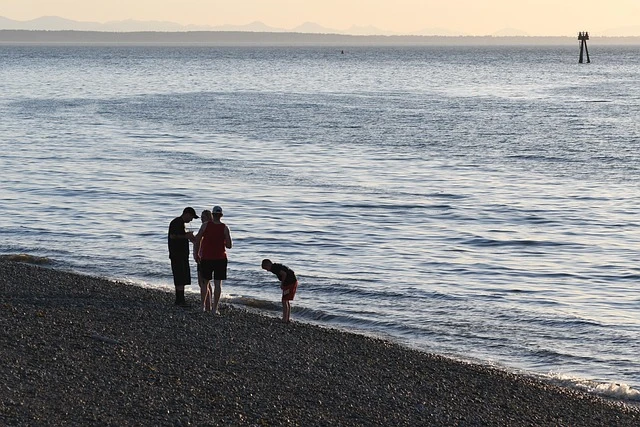
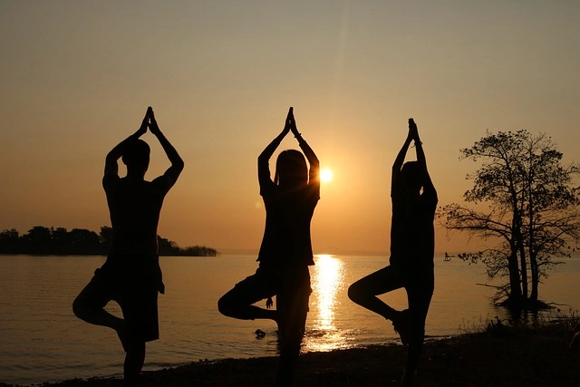
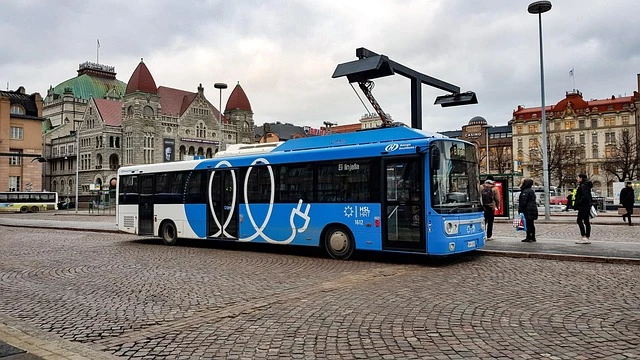
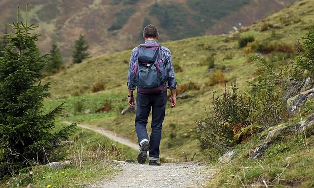

Nuestra historia
Somos una agencia online nacida de la convicción de que el turismo puede ser una fuerza regeneradora: para los destinos, para las comunidades y para quienes viajan.



"El viaje ideal no es aquel que te lleva al lugar más lejano, sino aquel que te acerca más a ti mismo y deja el mundo un poco mejor de como lo encontraste."
— Filosofía de Raíces Viajeras
Lo que nos mueve
No greenwashing. Evaluamos cada proveedor con criterios rigurosos: energía renovable, gestión de residuos, huella de carbono y certificaciones verificables.
Más del 70 % del precio de cada viaje se queda en la economía local: guías autóctonos, artesanos y restaurantes de kilómetro cero.
Diseñamos experiencias que fomentan la escucha, la presencia y el respeto profundo por la cultura y los ecosistemas de cada destino.
Publicamos nuestra huella de carbono anual, los destinos de cada euro pagado y los informes de impacto de nuestros viajes.
Adoptamos transporte de bajas emisiones, rutas de temporada baja y tecnología para minimizar el impacto de cada desplazamiento.
Conectamos viajeros de todo el mundo con experiencias únicas que refuerzan identidades locales y preservan patrimonios en peligro.

2025 — El inicio
Todo comenzó con una viajera que, tras recorrer cinco países, se preguntó: ¿por qué mis viajes dejan solo huellas de carbono y no de cambio positivo?
2026 — El lanzamiento
Lanzamos nuestra plataforma digital con los primeros 15 itinerarios verificados y la promesa de compensar el 100 % de las emisiones de cada viaje.
2025–2026 — Hoy
Más de 20 destinos, cientos de viajeros conscientes y un compromiso renovado: cada ruta que añadimos es una comunidad que apoyamos.
Las personas detrás del viaje
Fundadora & CEO
Bióloga de formación y viajera de vocación. Diseña cada ruta pensando en el equilibrio entre experiencia humana e impacto ambiental.
Experiencia de Viajero
Ex guía de montaña reconvertido en diseñador de experiencias. Cuida que cada momento del viaje sea memorable y sin rastro.
Responsable de Sostenibilidad
Experta en certificaciones ambientales y análisis de ciclo de vida. Audita y mejora la huella de cada viaje que ofrecemos.
Lo que prometemos
Todos nuestros alojamientos y proveedores pasan una auditoría anual realizada por organismos externos especializados en turismo responsable.
Calculamos la huella de cada viaje y la compensamos mediante proyectos de reforestación y energías renovables en los propios destinos visitados.
El 5 % de cada reserva se destina a un fondo que financia proyectos educativos, de conservación y de desarrollo en las comunidades anfitrionas.
Si algo no cumple nuestros estándares de sostenibilidad durante tu viaje, actuamos de inmediato y publicamos el incidente en nuestro informe anual.
de nuestros viajeros repetiría con nosotros
árboles plantados en 2025
comunidades beneficiadas
proveedores con energía renovable o certificada
Únete a nuestra comunidad de viajeros conscientes y descubre destinos que te transformarán sin dañar el mundo que los hace posibles.
Ver destinos Crear cuenta gratis